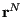

Next: Molecular Dynamics at Constant Up: Molecular Dynamics at Constant Previous: Stochastic NVT Thermostats: Andersen,
The final thermostat we consider is one based on the extended Lagrangian formalism, which leads to a deterministic trajectory; i.e., there are no random forces or velocities to deal with. The most common and so far most reliable thermostat of this kind is the Nosé-Hoover thermostat. This thermostat can be implemented as a “single” or a “chain”; here, we consider a chain.
The basic idea of the Nosé-Hoover thermostat is to use a friction
factor to control particle velocities. This friction factor is
actually the scaled velocity, , of an additional and
dimensionless degree of freedom, . This degree of freedom has
an associated “mass”, , which effectively determines the
strength of the thermostat. The equations of motion obeyed by this
additional degree of freedom guarantee that the original degrees
of freedom (, ) sample a canonical ensemble.
This degree of freedom is the terminus of a chain of similar degrees
of freedom, each with their own mass. The chain has a total of
 “links.” The overall set of equations of
motion are:
“links.” The overall set of equations of
motion are:
| (215) | |||
| (216) | |||
| (217) | |||
| (218) | |||
| (219) | |||
| (220) |
The main advantage of the Nosé-Hoover chain thermostat is that the
dynamics of all degrees of freedom are deterministic and
time-reversible. No random numbers are used. The code
mdlj_nhc.c implements an  = 2
Nosé-Hoover chain thermostat in an MD simulation of an Lennard-Jones
fluid, by implementing Algorithms 30, 31, and 32 from Frenkel & Smit. The relevant parameters are
= 2
Nosé-Hoover chain thermostat in an MD simulation of an Lennard-Jones
fluid, by implementing Algorithms 30, 31, and 32 from Frenkel & Smit. The relevant parameters are nhcT, the setpoint temperature, and nhcQ, the two masses. Fig. 27 illustrates the use of the NHC thermostat on an N=512,  = 0.84 LJ system.
= 0.84 LJ system.
|
|
cfa22@drexel.edu